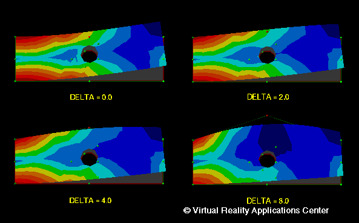

Combining Finite Element Results, Design Sensitivities
and Virtual Reality (Two-dimensional example)
A fixed end cantilever beam subject to a concentrated vertical load
is modeled using finite elements. After an initial finite element
calculation, the vonMises stresses can be displayed on the beam(A).
A two-dimensional control point lattice is constructed around the
beam model. The designer then selects a single control point
(shown in red). As the designer moves the control point, both
the surface and the stresses change (B, C, D). The boundary nodes
of the beam are mapped to the control point surface using NURBS
free form deformation methods. The interior node locations are
calculated using Laplace smoothing methods. The stress changes
are approximated using the sensitivities of the element stresses to
changes in the control point lattice.
Three-Dimensional Example
Return to Introduction...